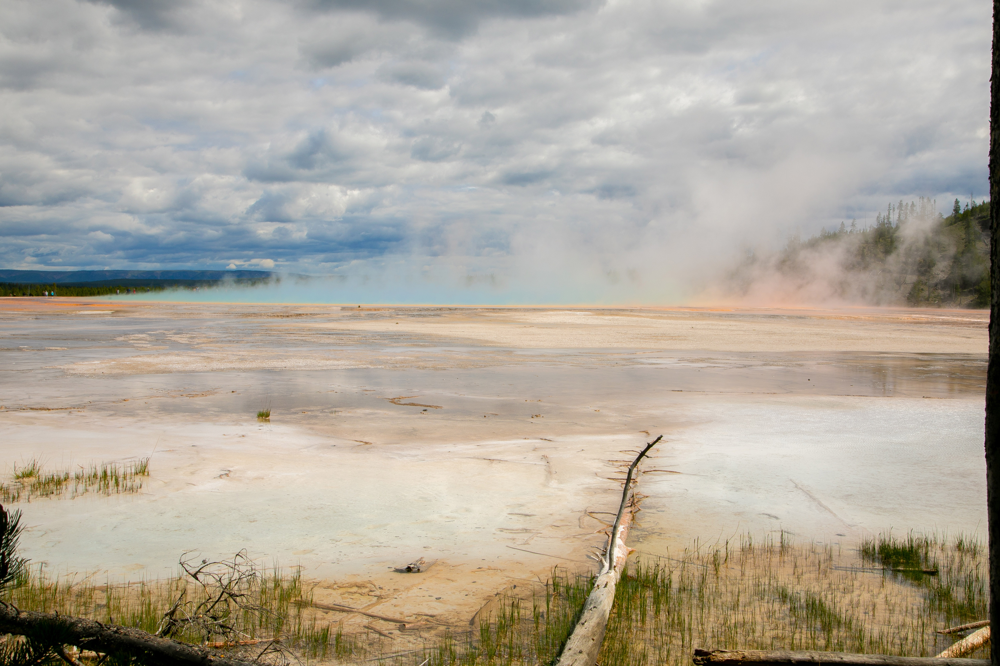
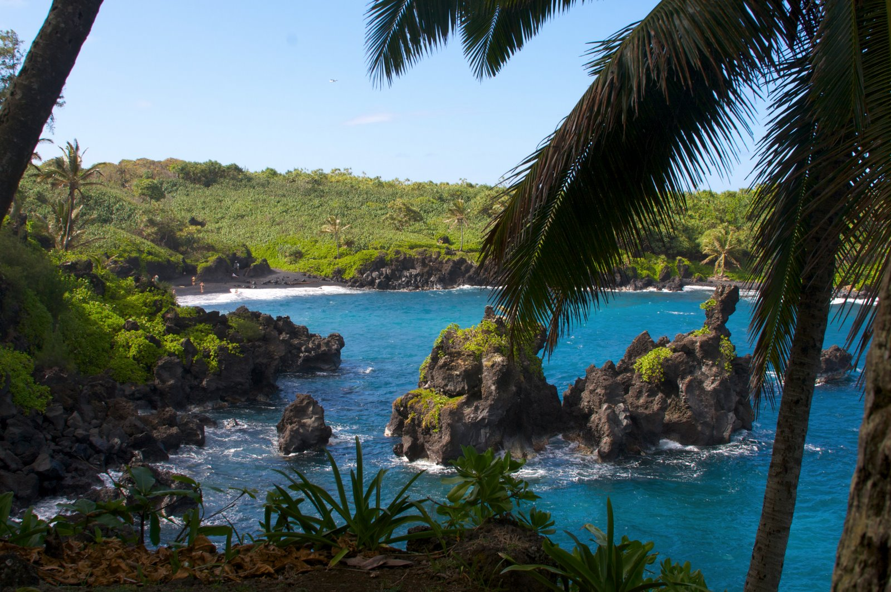
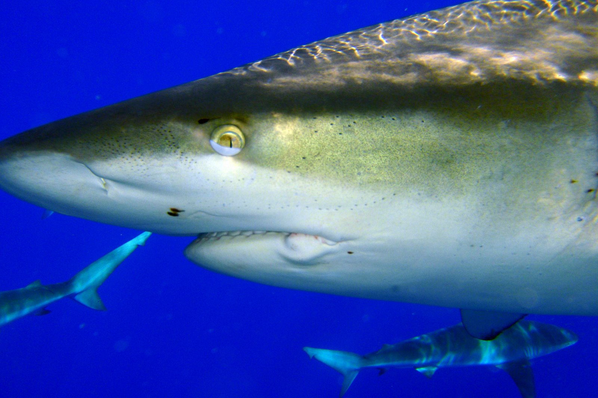
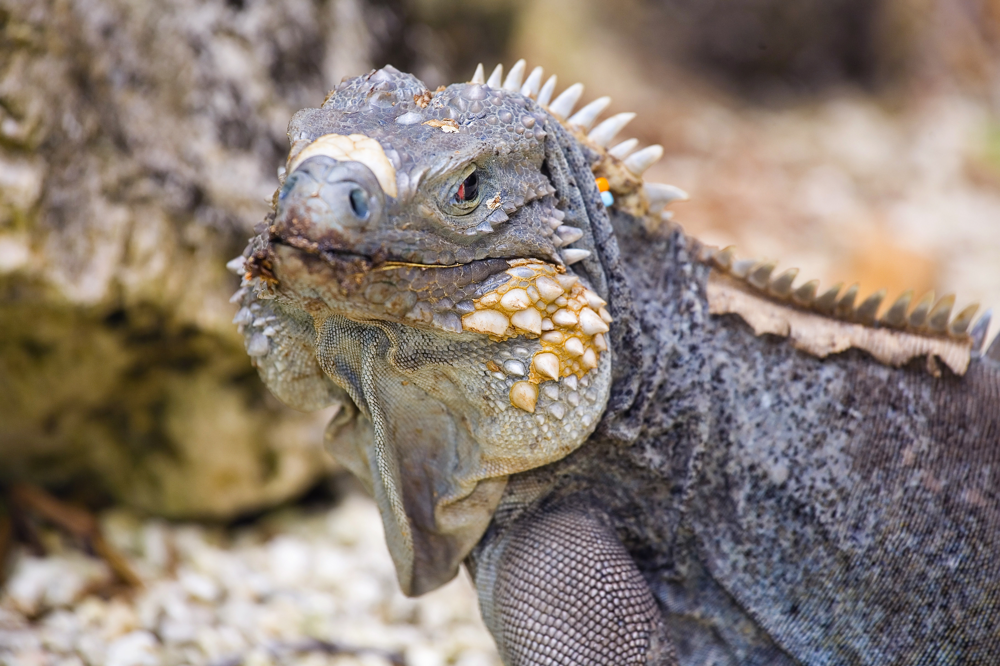
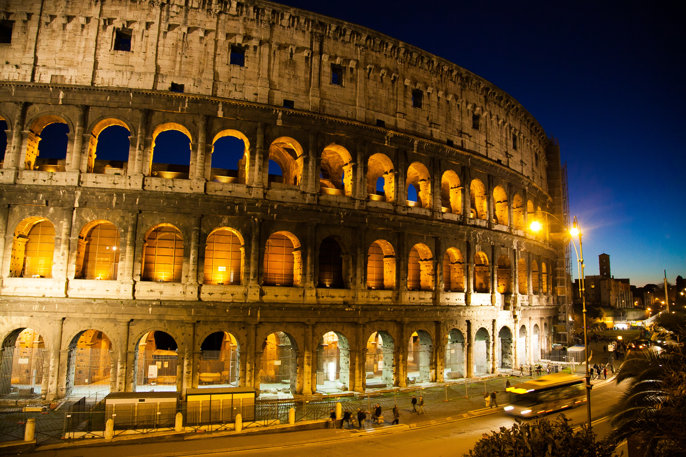
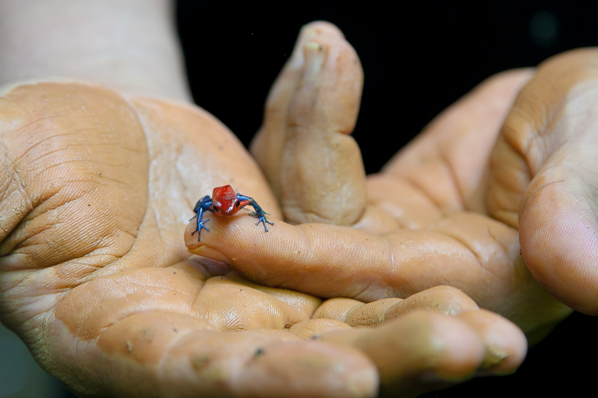
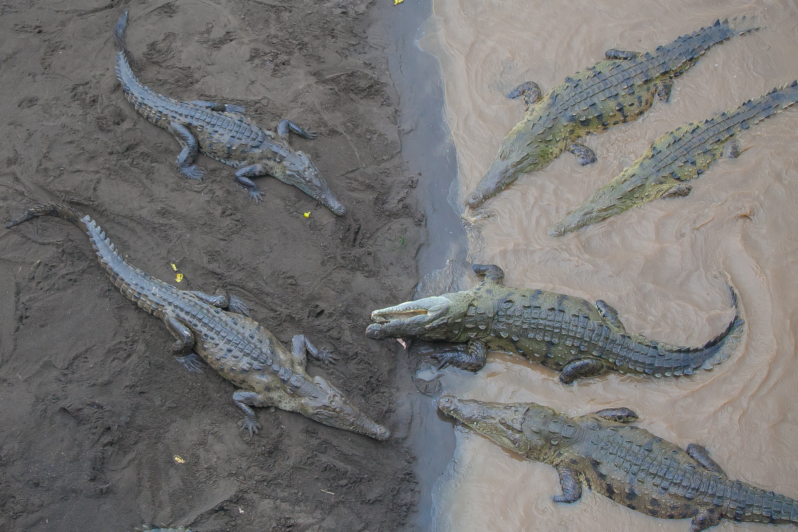
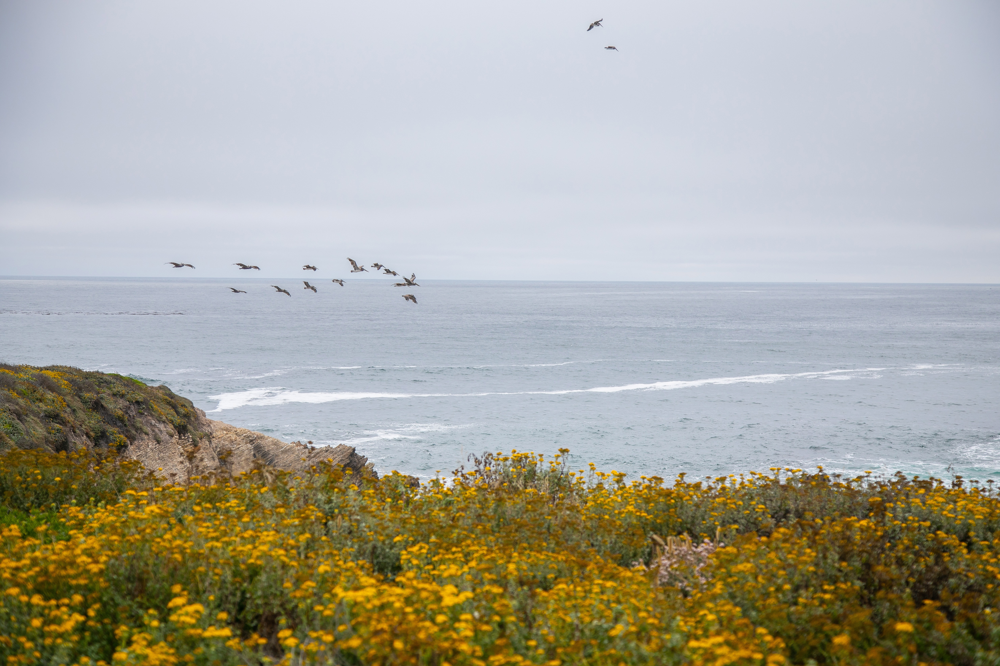

From cities to parks to beaches, we love to get away and find adventure. I take over a thousand
photos each trip, on average. While it's difficult to choose favorites, these are some of them!
For two years we went to school in Hawaii. Our trips were mostly confined to the island of Oahu,
but who
could be disappointed with that? We invested in an underwater camera, and have so many awesome photos of
marine wildlife.

Occasionally, during our two years of school, we were able to island hop. Maui's beaches are
amazing.

One of our favorite activities of all time was going in a shark cage. Although, now that we have
conquered that, we might want to just swim with these impressive creatures. Someday!After school, we returned to California and got jobs like real adults. Everything we earned was
only getting us closer to one goal: out of country vacation! Since Hawaii we had been dying to snorkel
again, so we headed to Grand Cayman, in the Caribbean!

Blue iguanas are only found on Grand Cayman. We were there during molting season, but that
did not stop these beasties from displaying gorgeous hues.

Once we had our fill of beaches, we had a promise to keep, which was hubby taking me to Italy.
Hurray and bellissimo!When in Rome...enjoy the busy plazas, colorful buildings, and countless fountains.Some of our favorite places in Italy were the quiet spots, like Siena.The ruins of Pompeii are the type of sight you cannot possibly fit into a one day trip, though
we did our best and loved every moment.In California itself, there are amazing places to go. We took our family to Death Valley. By
luck, we hit a super bloom year. So much rain had awakened dormant seeds, and the usally barren, desert
areas, were covered in blooms.Most of Death Valley looks like an uninteresting wasteland. But if you know where to go, the
views and geography are amazing. Here you can really see the ancient, ocean floor that Death Valley
used to be.The salt flats of Death Valley are crazy...the brightest white expanse of salt floor. Hot, hot,
hot in the sun!

Costa Rica was a destination we chose for its innumerable animals. One of our tour guides helped
us hold a poison arrow frog. You rub clay on your hands for protection, and just don't lick the little
guy!

Seeing crocdiles in person, in the wild, was pretty intense. These particular crocs are used to
being fed off of a bridge. So they congregate due to taught behavior. But their instincts are that of
any large reptile with huge teeth.Smaller than crocodiles, these bats are no less interesting. During the day they sleep in a line
to look like a snake. If a predator comes near, the quiver to make the snake "move." Clever!
In Costa Rica there are raccoons, a lot like the northern ones found in the US. But there are
also coatis. Both animals can open a backpack zipper and steal food from tourists. Thankfully we saw,
but did not experience that one.Another California gem is the Redwood National Park, along the northern coast. Absolutley one of
our favorite places in the world.One photo of our kids had to be included, in order to show (how cute they were back then and)
how tall this root ball, from a fallen redwood, is!Hidden Beach, in Redwood National Park, is one of our all time favorite beaches for breathtaking
scenes.Sometimes you make your family a montage of all the slugs you found amongst the Redwoods. One
person's
"Ew!" is another person's favorite (well, top five at least) creature.Finally, we took our kids on an international trip. Bangkok was a bustling hustle, full of
tuk-tuks and taxis and humidity and street food. We loved all of it, including the Grand Palace.
Every temple we visited had the most ornate, handmade and hand-painted tiles and murals and
decor. Even the cats can appreciate such intricacy.Elephants were a huge reason we wanted to go to Thailand in the first place. Thankfully we were
warned it is much better to visit them in sanctuaries than to ride them in the streets. Sadly, there is
a lot of abuse, which we learned all about. But seeing elephants in healing, and even petting this
beautiful, old gal, was amazing.These monkeys live in Lopburi, Thailand. They climb power lines, jump in people's cars, try to
go into stores, and hang around the old ruins of what is now called, "Monkey Temple."
Yellowstone National Park has to be one of the most fascinating places in the world. Amazing
what some underground vents and minerals can do!Protected wildlife, in its natural habitat, thriving and living amongst us without issue, is so
happy.Zoom lenses are our best friend. Distance is a good thing when it comes to ginormous buffalo.
Another crazy feature found in Yellowstone. The contrast of green hills and completely dead,
mineral-covered landscape, is both bizzare and awesome.My husband had to travel to Europe for his academics. I, of course, tagged along. One day in
Paris is hardly enough, but SO glad we got to climb to the top of Notre Dame and see the city from
there.From Paris we went Brussels for a two-day conference. A short trainride later, we visited
Bruges. This dreamy town is most likely, in my opinion, where fairies live.Can I please live on a canal in Bruges?As much as we love all of our foreign travel, California has quite the array of visit-worthy
places. Like Joshua Tree, where rocks have no rules.Astounding, desert scenes.Joshua Trees take a super long time to grow. We always felt very protective of this landscape
and took photos, but left all else in its place.Nobody can talk about California and leave out the coasts. One of our favorite areas is
Cambria, where we always say hello to the blobby, smelly, strange and wonderful elephant seals.

Montana de Oro is another place we visited often in California. We spent hours combing for
interesting sea stones, warming in the sun, and playing in the waves. Now that we are in Pennsylvania,
we will have to find
our new, favorite places! We are sure we will love them too.